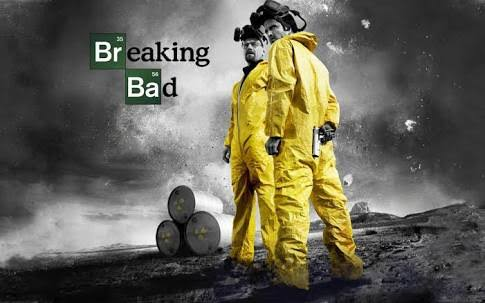
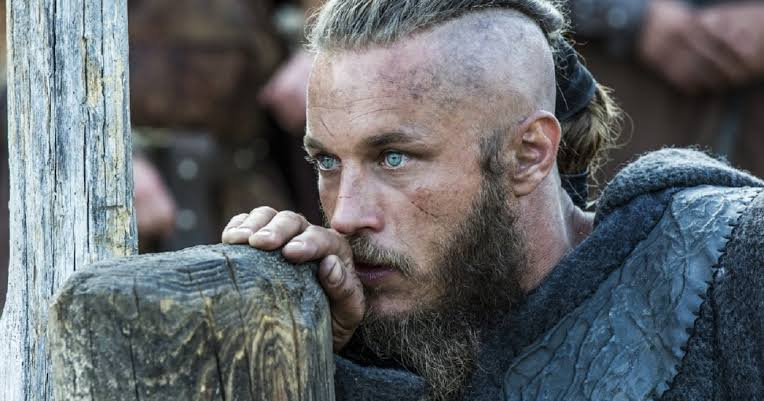
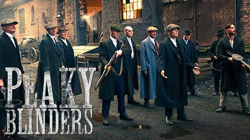
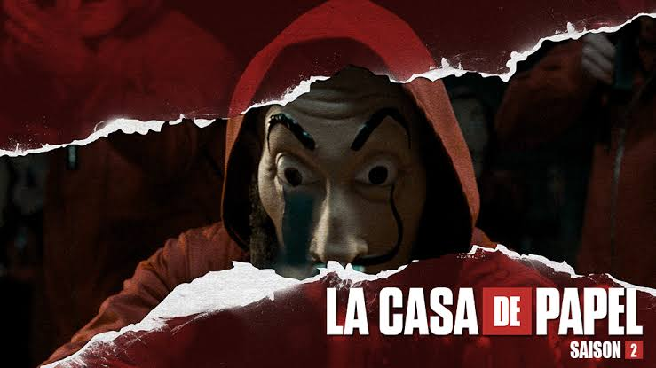
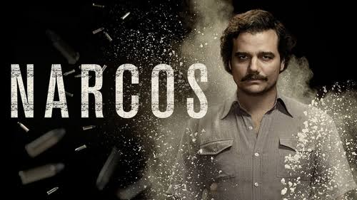

|  |
Breaking BadO novo drama "Breaking Bad" narra a história de Walter White (Bryan Cranston), um humilde professor de química que vê sua vida se transformar quando descobre ser portador de um câncer terminal. ... Com seu modesto salário sustenta a esposa Skyler (Anna Gunn) e seu filho Walter Jr. |
|  |
VikingsConsiderando-se descendente de Odin, Ragnar busca dominar vários territórios da Europa. Com isso, ele enfrenta a oposição do Earl Haraldson, um ex-guerreiro e agora líder de seu povo, casado com Siggy, uma jovem que tem sua lealdade dividida. |
|  |
Peaky BlindersPeaky Blinders é uma série de televisão britânica produzida pela BBC, criada e dirigida por Steven Knight (que já trabalhou em Senhores do Crime e Coisas Belas e Sujas) e já foi comparada pela crítica com a Boardwalk Empire da HBO. Peaky Blinders traz a história real da família Shelby, formada por criminosos que praticavam assaltos, contrabando e apostas ilegais. No ano de 1919, Thomas Shelby – líder da família e da gangue Peaky Blinders – volta da primeira guerra com o objetivo de estabelecer domínio da cidade de Birmingham interior da Inglaterra. |
|  |
La Casa de PapelOito habilidosos ladrões se trancam na Casa da Moeda da Espanha com o ambicioso plano de realizar o maior roubo da história e levar com eles mais de 2 bilhões de euros. Para isso, a gangue precisa lidar com as dezenas de pessoas que manteve como refém, além dos agentes da força de elite da polícia, que farão de tudo para que a investida dos criminosos fracasse. |
|  |
NarcosA vida e a morte de Pablo Escobar (Wagner Moura), um dos maiores narcotraficantes do mundo, chefe do Cartel de Medellín, na Colômbia. Escobar também era conhecido por ser um homem de família e reverenciado pela população mais pobre como um tipo de Robin Hood. |